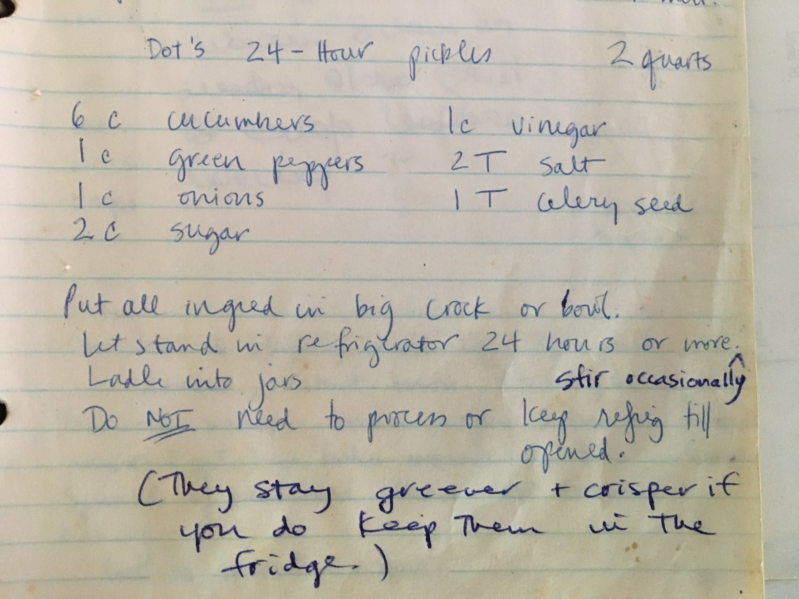

🗂️ Recipes
Collection of cooking recipes I've been using over the years.
Recipes are split into categories, see the side bar (☰) for table of contents!
Source for this website is here:
https://github.com/noahp/recipes
🍩 Beignets
Ingredients
- 1/2 cup (113g) lukewarm water
- 1/2 cup (113g) lukewarm milk
- 2 tablespoons (28g) butter, melted
- 1 large egg
- 1 teaspoon vanilla extract
- 1/4 cup (50g) granulated sugar
- 2 teaspoons salt
- 4 cups (482g) all-purpose flour
- 2 teaspoons instant yeast
- peanut/canola oil for frying
Directions
- combine everything, knead until you have a soft, smooth dough
- cover and let rise for an hour
- put in a greased bowl or bag in the refrigerator overnight, or up to 2 days
- remove from refrigerator, roll into a rough rectangle. aim for about 1/4"-3/8" thick.
- cut the dough into 2" squares.
- pour frying oil to a depth of about 3/4" into a heavy bottomed frying pan
- eat the oil to 360°F, and drop 5 or 6 squares of dough into the hot oil. they'll sink to the bottom, then after about 5 seconds or so, rise to the top.
- fry the beignets for 1 minute, then use a pair of tongs to turn them over. fry for another minute, until the beignets are puffed and golden brown all over.
- remove from the oil (tongs) and drain on paper towels.
- when the beignets are cool, sprinkle them heavily with confectioners' sugar.
🍞 English muffins
Ingredients
- 1 3/4 cups (397g) lukewarm milk
- 3 tablespoons (43g) softened butter
- 1 1/4 to 1 1/2 teaspoons salt, to taste
- 2 tablespoons (25g) sugar
- 1 large egg, lightly beaten
- 4 1/2 cups (539g) King Arthur Unbleached Bread Flour
- 2 teaspoons instant yeast
- semolina or corn meal, for sprinkling the griddle or pan
Directions
- combine all ingredients (except semolina/corn meal). stand mixer on low or hand mix until the dough is smooth and shiny, and coming away clean from the edof the bowl. let rise for 1-2 hrs.
- divide the dough into 16 pieces, shape each into a smooth ball, then flatten the balls until they're about 3" to 3 1/2" in diameter. cover and rest for 20 minutes.
- sprinkle your griddle or cast iron/heavy bottom skillet thoroughly with the semolina/corn meal. cook the muffins over low heat for 7-15 minutes per side, until the crust is golden brown. instant read thermometer inserted into the middle should read 200F (throw them in the over at 350F if you need to finish them without over browning).
- when they're done cooking, let them cool. split with a fork when eating.
🥙 Garlic Naan
Ingredients
- 1/4 cup hot (not boiling) water
- 1 tsp active dry yeast
- 1 tbsp sugar
- 3/4 cup warm milk
- 4 cloves garlic, grated
- 1 cup full fat Greek (or other thick) yogurt
- 4 cups plain flour
- 1,5 tsp baking powder
- 1 tsp baking soda
- 1/2 tsp salt
- 2 cloves garlic, chopped
- 3-4 tbsp butter
- Fresh coriander, roughly chopped
Directions
- Combine warm water, sugar and yeast and let stand for 10 min. until frothy.
- Combine flour, baking powder, baking soda and salt in a bowl and whisk together.
- Add the milk, yogurt and garlic to the yeast mixture and mix until combined.
- Add the flour mixture and stir. Knead with your hand until it just comes together.
- Cover with a damp cloth and leave for an hour or two until doubled in size.
- Divide into eight equal pieces. Heat up a pan to medium heat and add a little oil. Meanwhile roll out one piece of dough and drop it into the pan. Fry for a couple of min. until slightly browned on the bottom and puffed and bubbly on top. Turn and fry for another min. or so. Repeat with remaining pieces of dough. Wrap in a tea towel to keep warm.
- Add butter and garlic to a pan. Let the butter infuse for a couple of min.
- Brush the naan with the garlic butter and sprinkle coriander on top.
🍔 Hamburger buns
Ingredients
Tangzhong
- 2 tablespoons (20g) bread flour
- 2 tablespoons (27g) water
- 4 tablespoons (60g) whole milk
Dough
- 1/2 cup(120g) whole milk @ 95f (30c)
- 1 tablespoons (9g) instant yeast
- 2.5 cups (320g) Bread flour
- 1 teaspoon (7g) fine sea salt
- 2.5 tablespoons (35g) granulated sugar
- 1 whole egg
- 1 egg yolk
- 3 tablespoons (42g) unsalted butter, softened
Egg wash
-
1 whole egg
-
splash of whole milk
-
couple of teaspoons of melted butter to brush with after baking
Directions
- Make the tangzhong: add 2 tablespoons flour, 2 tablespoons water, and 4 tablespoons whole milk to a medium saucepan and whisk together. Heat over medium heat while whisking until you get a consistency like mashed potatoes. Scoop out the tangzhong into a small ramiken or bowl and let cool
- Heat 1/2 cup whole milk to ~95F, and mix in 1 tablespoon instant yeast
- Add 2.5 cups bread flour + 1 teaspoon salt + 2.5 tablespoons sugar to a stand mixer bowl and whisk together.
- Turn the stand mixer on medium speed (2 on my kitchenaid) and pour in the milk-yeast mixture, then the tangzhong
- Add 1 whole egg and 1 egg yolk while the mixer is running
- Once that starts to come together, add 3 tablespoons softened butter, 1 tablespoon at a time, until fully incorporated. Keep running the mixer for 5-8 more minutes until the dough is well mixed and sticking together.
- Lightly flour a work surface, scoop out the dough. Fold the sides into the center, turn over, and tuck the dough around in a circle until you have a tight ball. Move into a lightly greased bowl, cover with a dish towel or sheet pan and let rise for 1-2 hrs
- Divide evenly into 6 even pieces, about 95-105 grams each.
- For each piece, same as before; stretch and tuck the sides into the center, flip over, and tuck around in a circle until a nice tight ball forms. Place them on a backing sheet on top of a silicone mat or parchment paper, spaced about 6" apart. Cover with another baking sheet or pastic wrap and let rise for 1-2 hrs
- Brush the entire top side of each bun with the egg wash, then put into a 375F over for 16-18 minutes, until deep golden brown.
- Brush with melted butter (optionally top with poppyseeds or sesame seeds).
🐚 Madelines
Ingredients
- 2 eggs
- 3/4 teaspoon vanilla extract
- 1/8 teaspoon salt
- 1/3 cup white sugar
- 1/2 cup all-purpose flour
- 1 tablespoon lemon zest
- 1/4 cup unsalted butter (1/2 stick)
Directions
- Preheat oven to 375 degrees F (190 degrees C).
- Melt butter and let cool to room temperature.
- In a small mixing bowl, beat eggs, vanilla and salt at high speed until light.
- Beating constantly, gradually add sugar; and continue beating at high speed until mixture is thick and pale and ribbons form in bowl when beaters are lifted, 5 to 10 minutes.
- Sift flour into egg mixture 1/3 at a time, gently folding after each addition.
- Add lemon zest and pour melted butter around edge of batter. Quickly but gently fold butter into batter. Spoon batter into molds; it will mound slightly above tops.
- Bake 14 to 17 minutes, or until cakes are golden and the tops spring back when gently pressed with your fingertip.
- Use the tip of the knife to loosen madeleines from pan; invert onto rack. Immediately sprinkle warm cookies with granulated sugar. Madeleines are best eaten the day they're baked. Leftover madeleines are wonderful when dunked into coffee or tea.
🍪 Mom's Cookies
Makes
2 dozen
Ingredients
- 1/2 cup butter, softened
- 1/2 cup brown sugar
- 1/2 cup white sugar
- 1 egg
- spoonful of plain yogurt
- 1 cup white flour
- 1/4 cup whole wheat or rye flour
- 1/2 tsp baking soda
- dash of salt
- 1 cup chocolate chips
- 1/4 or so each of sunflower seeds, chopped walnuts, raisins, rolled oats
Directions
- Cream butter and sugars. Add egg and yogurt.
- Add flours, soda and salt. Add all the xtras.
- Drop by spoonfuls onto a cookie sheet.
- Bake at 350-375 depending on how hot your oven is for 8 minutes or until done. Eat!
🧁 Popover muffins
These are more muffin-like in shape and size, still with a good popover interior but not the classic gigantic puffballs

Ingredients
- 3 tablespoons melted butter, plus more for greasing pan
- 1 1/2 cups whole milk
- 4 eggs
- 3/4 teaspoon salt
- 1 1/2 cups all purpose flour
- 2-3 tablespoons white granulated sugar (optional)
- 1 teaspoon vanilla extract (optional)
Directions
Note: if you have a large pourable container like a large pyrex, mix everything in there and you can pour directly into the muffin cups
- Preheat oven to 450°F. Grease popover pan well with butter.
- In a large bowl, whisk together milk, eggs, and salt (and optional sugar + vanilla extract). Whisk in butter. Add flour and whisk until smooth.
- Fill each cup 2/3 full with batter. Bake popovers until golden, 30 minutes. Let cool for 5 minutes in pan then turn out onto wire rack. Serve immediately.
🍲 Beef Stew
Ingredients
- 4 cups homemade or store-bought low-sodium chicken stock (950mL)
- 3 tablespoons tomato paste (2.5 ounces; 75g)
- 1 tablespoon soy sauce (15ml)
- 3 oil- or salt-packed anchovy filets, rinsed (or 1 tablespoon Asian fish sauce)
- 1 tablespoon Worcestershire sauce (15ml)
- 2 tablespoons vegetable oil
- 3 pounds (1.25kg) whole boneless beef chuck roast, cut into 3 steaks
- Kosher salt and freshly ground black pepper
- 10 ounces white button mushroom, quartered
- 4 medium carrots (10 ounces; 275g), 2 left whole, 2 cut into bite-sized pieces
- 8 ounces frozen or fresh pearl onions (thawed if frozen, peeled if fresh) (225g)
- 1 large yellow onion, unpeeled, split in half (10 ounces; 275g)
- 2 small stalks celery (3 ounces; 85g)
- 3 medium cloves garlic, unpeeled
- 1 cup sherry, dry vermouth, or red wine (8 ounces; 235mL)
- 2 tablespoons flour (about 3/4 ounces 20g)
- 2 bay leaves
- 4 sprigs thyme
- 1 pound Yukon gold potatoes, peeled and cubed (450g)
- 4 ounces frozen peas
Directions
- Combine stock, tomato paste, soy sauce, anchovies, and Worcestershire sauce in a blender and blend on high speed until homogenous. Set aside.
- Adjust oven rack to lower position and preheat oven to 300°F. In a large Dutch oven, heat oil over medium-high heat until shimmering. Season beef all over with salt and pepper and add to Dutch oven. Cook, turning occasionally, until beef is well browned on 2 sides, about 10 minutes. Transfer beef to a rimmed baking sheet or large plate and set aside.
- Add mushrooms to Dutch oven and cook, stirring, until liquid is released and mushrooms begin to brown, about 6 minutes, lowering heat as necessary to prevent scorching. Add diced carrots and pearl onions and cook, stirring, until well-browned on all sides. Season to taste with salt and pepper then transfer to a bowl and set aside.
- Add halved yellow onion to Dutch oven, cut-side-down. Add whole carrots, celery sticks, and garlic. Cook, turning carrots, celery, and garlic occasionally until all the vegetables are well-browned, about 4 minutes.
- Add wine or sherry, scrape up browned bits with a wooden spoon, and cook until reduced by 3/4, about 3 minutes. Add broth mixture and bring to a simmer. Remove from heat.
- Cut seared steaks into 1 1/2- to 2-inch chunks and transfer to a large bowl. Toss with flour. Add beef and any juices accumulated in the tray or plate to the Dutch oven along with bay leaves and thyme sprigs. Stir to combine and return to a simmer over medium heat. Transfer to oven, cover with lid partially open, and cook until beef is starting to become tender, about 1 hour 30 minutes. Liquid should be at a slow, steady simmer the entire time. Adjust oven temperature if necessary during cooking.
- Remove stew from oven. Using tongs, fish out and discard carrot, celery, thyme, bay leaves, onion, and garlic. Add potatoes and reserved sautéed mushroom, pearl onions, and carrots to stew, return to oven, and continue to cook, partially covered, until beef, potatoes, and carrots are tender and broth has thickened, 45 minutes to 1 hour.
- Remove stew from oven. If necessary, place over a burner and simmer for up to 15 minutes to reduce to desired consistency. Stir in peas. Season to taste with salt and pepper if necessary. Serve immediately, or let cool overnight or for up to 5 days and reheat to serve.
🍜 Bibimbap
Note: definitely sub in whatever ingredients you like! this is just a rough idea of what this dish can be
Ingredients
About 3 servings
Basic ingredients
- 1 cup rice
- 3 eggs
- 3 scallions cut into ~2" pieces
- ~6 ounces pork belly OR boneless chicken thighs OR chicken breast OR any pork, OR tofu, OR any beef, OR kielbasa/andouille/chorizo/bacon/pancetta
- 1 carrot, cut into strips and sectioned into bite sized pieces
- 1/4 cup cucumber sliced into bite sized pieces
Sauce/marinade
- 3 tablespoons soy sauce (I like dark soy sauce, but any kind works!)
- ~1/2 teaspoon corn starch
- 1 teaspoon seasame oil
- 1 teaspoon white granulated sugar
- (optional) 5-spice seasoning
- (optional) 1 tablespoon Shaoxing wine or sherry
Condiments (optional but recommended)
- gochujang sauce VERY DELICIOUS, or chili garlic/hot sauce, hoisin sauce, chili crisp, siracha, whatever your preference!
- cilantro or parsley for garnish
- toasted sesame seeds
Directions
- Load rice into rice cooker per directions.
- Slice the protein into bite-sized pieces.
- Mix the sauce ingredients, stirring thoroughly, and add the protein, mixing completely.
- Cut up the carrot and cucumber and scallions.
- Heat oil in a work or nonstick frying pan on high heat until shimmering and HOT
- Add the protein and cook, stirring occassionally, until done, maybe ~4-5 minutes or less
- Remove protein, add more oil if necessary, reheat until HOT again.
- Crack in the eggs and fry, flipping once if you like. If there's room left in the pan, add the scallions too, or do them in a follow-up batch.
- Once rice is ready, start assembling:
- Rice on the bottom
- Protein in a pile on one side
- Egg on one side
- Carrots and cucumbers on side #3
- Scallions in the last quadrant
- Dress with whatever condiments you like!
🍛 Butter chicken (murgh makhani)
Ingredients
First marinade
- 800g chicken, cut into bite-sized pieces. Use whatever you want; bone-in, boneless, thighs, breasts. I used boneless chicken thighs.
- 2 tsp red chili powder
- 1 tsp salt
- 1 tbsp lemon juice
Second marinade
- 120g Greek (or other thick) yogurt
- 5 cloves garlic, turned into a paste
- 1 inch ginger, turned into a paste
- 1 tbsp oil
- 1 tsp ground cumin
- 1 tsp ground turmeric
- 1/2 tsp garam masala
Sauce
- 4 tbsp butter
- 4 green cardamom pods, smashed
- 1 black cardamom pod, smashed
- 1 stick of cinnamon
- 2 cloves
- 1 bay leaf
- 2 inches ginger, turned into a paste
- 6 garlic cloves, turned into a paste
- 1 kg tomatoes or 2 400g tins of tomatoes, blended into a smooth paste (if using fresh tomatoes pass the puree through a sieve to catch any skins).
- 2 green chillies, cut lengthwise
- 1 tbsp red chili powder
- 1 tsp garam masala
- 1 tbsp crushed fenugreek leaves
- 75-100 ml single cream
- Salt to taste
- Sugar to taste, optional
Directions
- Mix chicken with the chili powder, lemon juice and salt and set aside for 20 min.
- Mix all the ingredients for the second marinade. Add the chicken and pop in the fridge overnight.
- The next day cook the chicken. The outside is supposed to be nicely browned and charred in places. It’s ok if the inside is still raw. You can cook it on a griddle pan, on a barbecue, or under the broiler (or if you happen to have a tandoor use that).
- Heat 2 tbsp of butter in a pan. Add black and green cardamom, cloves, cinnamon and bay leaf and cook until fragrant.
- Add ginger and garlic pastes and fry for a couple of min. until the raw smell disappears.
- Add tomato puree, green chillies and red chili powder and cook until most of the water from the tomatoes has evaporated and the oils start to separate.
- Add around a cup of water (add more or less depending on how thick you want the sauce to be), and the chicken and simmer for about 10 min.
- Add the garam masala, fenugreek leaves, remaining 2 tbsp of butter and cream. Add salt and optionally sugar to taste. Simmer for another min.
🥞 Crepes
Ingredients
- 2 large eggs
- 1 1/4 cups whole milk (10 fluid ounces; 280ml)
- 1 cup flour (5 ounces; 140g)
- 1 tablespoon melted unsalted butter or vegetable oil (1/2 ounce; 15ml), plus more for cooking
- Pinch kosher salt
- 1 tablespoon (8g) sugar, if making sweet crepes
- 1 tablespoon minced fresh herbs, such as parsley, tarragon, chervil, or chives (optional; for savory crepes)
Directions
- blend all ingredients until smooth, about 10 seconds. if adding herbs for savory crepes, add them and pulse briefly to combine.
- heat a 10-inch nonstick skillet over medium heat, grease lightly with oil or butter
- pour in about 3-4 tablespoons of batter and quickly swirl it around to coat the bottom of the pan
- cook until the top is dry, 20-30seoncds. pull up one edge with a fork or spatula, grab it with your fingers, and flip. cook another 10 seconds or so then transfer to a plate. repeat for the rest of the batter.
🥞 Dutch Baby
Ingredients
Note- 2 eggs per person is about the right amount, scale recipe accordingly, and use multiple pans
- 3 large eggs, left at room temperature for 30 minutes (put them in a bowl of hot water to speed up)
- 3 tablespoons sugar, plus more for garnish
- 1/2 teaspoon cinnamon
- 1/4 teaspoon salt
- 1/2 teaspoon vanilla extract
- 2/3 cup (about 3 3/4 ounces) flour
- 2/3 cup milk, at room temperature (microwave to speed up)
- 4 tablespoons unsalted butter, cut into 4 pieces
- 1 lemon, cut into wedges, for garnish, optional
Directions
- Place skillet in oven on middle rack and preheat to 400°F. In the bowl of a food processor combine eggs, sugar, cinnamon, salt, and vanilla extract. Pulse until combined. Add flour and pulse to combine. With motor running, add milk, and process for 30 seconds.
- Take hot skillet out of oven and add butter, swirling to coat pan until butter is melted. Pour batter into pan. Bake until dough is puffed and golden, about 20 minutes. Serve immediately, with extra sugar sprinkled on top, and a squeeze of lemon, if desired.
🧆 Falafel
Ingredients
- 1/2 pound dried chickpeas (1 generous cup; 225g)
- 2 ounces picked fresh cilantro, parsley, or mint leaves, or preferably a mixture of all three (about 2 cups; 55g)
- 6 scallions, white and pale green parts only, sliced (about 2 ounces; 55g) (optional)
- 2 medium cloves garlic, minced (about 2 teaspoons; 10ml)
- 1 teaspoon (about 4g) ground cumin
- 1/2 teaspoon (about 2g) ground coriander seed
- 2 teaspoons (about 10g) kosher salt, plus more for seasoning
- 2 to 3 cups (480 to 720ml) vegetable oil, for frying
Directions
- Rinse chickpeas and place in a large bowl. Cover with cold water, adding enough to allow the chickpeas to at least triple in volume. Cover and let stand at room temperature overnight. The next day, drain, rinse, and carefully dry chickpeas in a salad spinner.
- Combine chickpeas, herbs, scallions, garlic, cumin, coriander, and salt in the work bowl of a food processor. Pulse until chickpeas are very finely minced, stopping the food processor to scrape down the sides as necessary. A handful of the mixture squeezed into a ball should be able to barely hold together. If not, process a little more.
- Transfer mixture to a bowl, cover, and place in refrigerator for 15 minutes to allow time for more starch to seep out of chickpeas. This will help the balls retain their shape better once formed. Using a tablespoon measure, scoop out heaping spoonfuls of the mixture into your hand. Gently shape each into a ball (you will not be able to roll the mixture like cookie dough; this is okay) and place them on a clean plate.
- When all the balls have been formed, fill a deep cast iron, carbon steel, or nonstick skillet or Dutch oven with 3/4 inch of oil. Heat over high heat until oil registers 375°F on an instant-read thermometer. Carefully lower chickpea balls into oil one at a time, allowing a little space between each ball and cooking in batches if necessary. Adjust heat as necessary to maintain a temperature of between 350 and 375°F. Allow to cook undisturbed until well browned on bottom sides, then carefully flip balls with a fork until browned on second side, about 4 minutes total. Transfer cooked chickpea balls to a paper towel–lined plate and season with salt. Repeat with remaining chickpea balls.
- Serve immediately with tahini and/or hummus on the side, or stuffed into pita bread with tahini, tomatoes, cucumber, pickles, and shredded cabbage.
🍕 NY pizza
Ingredients
Forkish method pizza dough
This will make enough dough for 2-3x 10" pizzas, I'm guessing
- 500g flour (see flour note)
- ~350g (baker's percentage 70%) water at 90-95F
- 1 tsp commercial yeast (or sourdough starter etc.)
- ~10g salt
- mix flour and water. aiming for a mixture temperature of ~75F, so err higher on the water temperature if your kitchen is colder. leave it covered for 20 minutes to autolyze
- add yeast and salt, mix thoroughly. put in the fridge overnight, or up to 2-3 days
Flour note: ideally type 0 or 00; or anything with ~12% protein and fine mill. I've had good results with general purpose like KAF's Select Artisan. You can also use all-purpose or bread flour for just fine results too.
Pizza sauce
- canned or fresh roma tomatoes
- salt + pepper
- (optional) granulated garlic + onion
- (optional) ground or fresh oregano, basil
Immersion blender or food processor some canned or fresh roma tomatoes with some salt and pepper. Optionally add granulated garlic + onion, oregano (ground or fresh), basil.
Cheese
- low-moisture whole milk mozzerella
Low moisture has the melting profile for classic NY pizza.
Directions
Pizza steel recommended.
- heat steel or stone in oven to 500F, or higher if your oven supports it
- while it's heating, dough out of fridge and divide into balls
- once oven's ready, press out one of the pizza balls into form, add sauce and cheese
- bake for ~5-7 minutes, when the cheese is fully melted and pizza looks done
🛠️ Cooking Equipment
Idea from https://tylertringas.com/cooking-for-founders/
Pots and pans
-
cook long pasta in it!
-
saute dishes etc
-
searing on stove top, cornbread in the oven, etc. i prefer to cook acidic dishes in the stainless to keep the seasoning
-
can use it for pasta as well as stocks
Baking
-
so useful; roasting veggies, prep, cookies, etc
-
roast chicken, whole vegetables (sheet trays are better for cut vegetables)
-
silicone baking sheets
reusable parchment
-
so expensive 😢 but really improves pizza crust. use it for quesadillas or smash bugers on the stove top, or making english muffins
-
parchment paper
useful in a lot of places; cut a small square when smashing smash burgers and it'll keep your spatula from sticking; cook bacon for a crowd by lining a sheet tray with it
Tools
-
2 stainless steel tongs
-
so useful. pancakes, stirring vegetables, cooking eggs, etc
-
stirring stuff, tasting
-
scraping, stirring
-
very extravagant, but super handy for scraping the last bit of sauce out of a pan. kinda overlaps with below though
-
this is a nice set with the 3 i use most (small, large, spoon-like)
-
i broke some of those handled graters >_< which are frustratingly NOT a single piece. this set has been a lot more reliable and has a nice large grating surface
-
super useful; cheese, citrus, garlic/alliums, nutmeg, etc.
-
breaking down poultry, cutting herbs. i use mine for ton of miscellaneous tasks
-
you can cook beans and lentils and other grains in these too!
-
sauces, mayonnaise
-
a nice big piano wire whisk, 12 or 14", handy for mixing dry or wet ingredients
-
nothing fancy, but necessary for making laminated doughs (pie crusts, biscuits, pastries). i end up using my french style rolling pin more often tbh (easier to clean, more durable)
-
useful for serving soups / stews / chili portions. also can be used for wok cooking, pancakes
Prep
The references list is spot on for this stuff: https://tylertringas.com/cooking-for-founders/
Some additions:
-
i use this for pancakes + madelines + popovers. saves cleaning an extra bowl
Knives
Probably most controversial:
-
2 8-inch commercial chef's knives
you can spend a ton of money on knives if you like. i've had extremely good results with these knives; bomber, sharpen easily and very sharp. clean and dry immediately after using them. i used to use a japanese water stone to sharpen, but now i just use one of those pocket ceramic sharpeners, which works great on these knives
You DON'T need a bread/serrated knife. A sharp chef's knife is better in every application IMO.
I rarely/never use a paring knife; pretty much any kitchen task is easier with a chef's knife for me.
That's it. That's all you need for knives.
The advice on cutting boards here is spot on (at least 1 large wooden, 12"x18" or bigger, and 2-3 small wooden or plastic): https://tylertringas.com/cooking-for-founders/
Storage
-
these are super. they all use the same lids, nest compactly, leakproof, clear so you can tell what's in them. cheap. reusable. you can toss them if they break.
Exotics
This is stuff I use less frequently but is handy.
-
I have a model sortof similar to this one. I use it when grinding whole toasted sichuan peppercorn, toasted whole spices for indian food, etc
-
guacamole tastes better out of it, might be all in my head though 😅 also useful for making aioli and pesto
-
stand mixer
I use this pretty rarely but it is useful when making enriched doughs like brioche
-
food processor
also pretty rarely used, but great for pesto or lazy biscuits, breadcrumbs
-
cooking chopsticks
these are handy for stirring and moving stuff when tongs are a little too hefty. cheap to have around. I don't use mine as much as I should!
🥗 Miso Dressing
Recipe from Helen Rennie
Ingredients
- Zest and juice of 1 lime
- Zest and juice of 1 lemon
- 1-2 inches of ginger grated on a microplane zester
- 50g white miso (3 Tbsp)
- 70g canola or any neutral oil (5 Tbsp)
- 15g sesame oil (1 Tbsp)
- (optional) few tbsp light soy sauce
Directions
- Blend everything together using an immersion blender.
🌭 Andouille sausage
Ingredients
- 1000g pork butt (2.2 lbs)
- 13g kosher salt (2 heaping tsp)
- 2 1/2g Cure #1 (1/2 tsp, level)
- 10g garlic (3 cloves, pressed)
- 5g black pepper (2 1/2 tsp, cracked)
- 4g cayenne pepper (2 tsp)
- 100g cold water (1/4 cup)
Directions
- Grind lean pieces of meat through a stuffing plate or 1/2" (12 mm) - 3/4" (18 mm) plate.
- Grind the fattier pieces through a 1/4″ (6 mm) plate.
- In a large bowl, mix the meat with the rest of the ingredients, including the water.
- Stuff into 38 - 40 mm beef or hog casings. Tie to make 12” links.
- Cure in the fridge for 12 - 24 hours.
- Dry for 2-4 hours at room temperature then hold for 30-60 minutes in a pre-heated smoker at 130F without smoke.
- Smoke over pecan wood at around 140F for about 8 hours until you obtain a nice rich mahogany color.
- Cook Andouille in the smoker at 170F - 195F until the internal temperature reaches 154F-158F. This should take about 30-40 minutes.
- Chill quickly by placing on a cold marble slab or a similar cold surface.
- Refrigerate after cooling down. Keep wrapped in butcher's paper for best results.
Notes: You may also poach Andouille after smoking in water at 170F-175F until the internal temperature reaches 154F - 158F, about 20 minutes. Alternatively, you can steam or cook in the oven with convection to finish cooking. Another option is to refrigerate it as is and cook as part of a dish, like gumbo.
🌶️ Chili Crisp
Makes 1 quart.
Ingredients
- 27g (1 cup) dried árbol chilies, stems removed
- 20g (3/4 cup) dried chiles japones, stems removed
- 25g (3/4 cup) dried Kashmiri red chilies, stems removed
- 1/2 cup (50g) roasted, salted peanuts, chopped
- 2-inch piece (30g) fresh ginger, sliced into thin matchsticks
- 3/4 teaspoon (2g) freshly ground black pepper
- 3 pieces whole star anise
- 2 red or black (or green) cardamom pods, split in half
- 2 teaspoons (6g) freshly ground cumin
- 3 tablespoons (28g) freshly ground Sichuan peppercorn
- 5 teaspoons (30g) Diamond Crystal kosher salt; for table salt, use about half as much by volume or the same by weight
- 2 tablespoons (20g) sugar
- 2 1/2 cups (500g) peanut oil, or any other neutral oil
- 2 cups (200g) thinly sliced shallots (about 1mm thick)
- 3/4 cup (65g) thinly sliced garlic (about 1mm thick)
Directions
- Place a wire rack inside a quarter- or half-sheet tray. Using your hands and kitchen shears, cut open chilies and place them on rack. Shake rack to sift off most of the seeds (don't worry about removing all the seeds). Transfer chilies to a bowl and discard seeds.
- Using a spice grinder and working in batches, process chilies until they are ground to a size just larger than standard chili flakes. Transfer processed chilies to a heatproof bowl or pot large enough to accommodate bubbling oil (at least 4 quarts in size). Combine chili flakes with peanuts, ginger, black pepper, star anise, cardamom, cumin, Sichuan peppercorn, mushroom powder, salt, MSG (if using), and sugar. Set aside.
- Set a fine-mesh strainer over a 2-quart heatproof bowl. In a 4-quart saucepan, combine oil and shallots. Cook over high heat while constantly stirring. Once shallots become light golden brown, strain. Pour oil back into pot and add garlic. Cook over medium-low heat, constantly stirring, until light golden brown, then strain. Return oil to pot once more. Set aside fried shallots and garlic.
- Heat oil to 375°F (190°C). Pour hot oil over chilies, spices, and other seasonings. Stir well to distribute hot oil throughout. Set aside to fully cool, about 30 minutes or until bowl or pot is cool to the touch.
- Once chili-and-oil mixture has fully cooled, remove star anise and cardamom pods. Mix in fried shallots and garlic. Pour finished chili crisp into jars and store in the fridge for about 3 months. It can be served immediately, but for best flavor, eat it the next day. Stir well before serving.
🌭 Kabanosy

Recipe based on:
Ingredients
(Yields about 10 pairs of 10-12" links)
- 1200 grams (2.5#) of pork butt
- 25 grams salt
- 3 grams Cure #1
- 4 grams black pepper
- 2 grams caraway seeds
- 2 grams mace
- 4 grams sugar
- 1/3 cup ice water
Directions
- Chill pork butt in the freezer for ~1hr before starting, helps keep everything nice and cold while processing.
- Coarse grind everything together
- Stuff into 22mm sheep casings
- I smoked them over cherry (chips) for about 1.5 hours only, I only have a round weber grill I use to smoke, with aluminum foil to indirect the heat a bit, but it's a really poor setup for slow smoking anything.
- Dry on wire racks in a refrigerator, turning occasionally, for 5 days.

🍖 Kielbasa
Recipe from Ethan Chlebowski
Ingredients
Ingredients by percentage
All ingredients are % of meat; for 1000g meat, 1.75% = 17.5g.
- 70% Lean / 30 % Fat Pork Meat (or beef, venison, etc.)
- 1.75% Salt
- 1.75% Brown Sugar
- 0.5% Black Pepper
- 0.25% Cure #1
- 0.187% Garlic Powder
- 0.125% Whole Mustard Seed
- 0.0625% Pickling Spice*
- 0.0313% Marjoram
- Water
- Sausage Casings
*For the pickling spice, I didn't have any on hand so I cobbled up the following:
Equal parts:
- dried bay leaves
- allspice berries (or powdered) (can sub junpier berries)
- coriander seeds (or powdered)
- ground ginger
Toast the whole spices in a dry pan, then roughly grind them in a mortar and pestle or spice grinder.
Other optional spices are cardamom, star anise, cinnamon.
I also increased the mustard seed a touch because I like it.
Ingredients calculator
It's really important to get the salt and cure quantities precise; the spices are definitely flexible.
Directions
Multiply the meat by the percentages of spices.
For example, 454 grams of pork X 0.0175 (1.75%) gives you around 8 grams of salt.
- Mix the measured spices into cold meat chunks (or ground meat if using). Note: the meat grinds better if very cold, almost frozen.
- Add the meat to the grinder and push it through. Once the meat is ground, pour water over it and start mixing it by hand. There aren't specific measurements for the amount of water this is more of a by feel thing to see how much you want to add. Mix by hand, add water and adjust as needed.. At the end of the process, the meat should clump together and even sticks to your hand without falling. Note: At this point, you have loose kielbasa that can be fried up as a burger for a delicious lunch.
- Fill the sausage stuffing container with the kielbasa. Place the casing over the tube and slowly extrude the sausage into the casing.
- Once the sausage is stuffed, twist into links by pinching together and twisting the casing.
- Hang the sausages to dry for a few hours until the outside casing is no longer wet.
- Meanwhile set up the smoker (weber grill, smokehouse, electric smoker, etc).
- Smoke the kielbasa until the internal temperature reaches 150 F (65 C).
- Rinse or immerse with cold water to bring the sausages back to room temperature, then leave them on a rack to "bloom" for about 2 hrs (this will deepen their color to a nice dark red).
- Enjoy the kielbasa with sauerkraut, on sandwiches, etc. Freeze any extra.
🥒 Mom's Pickles
🥓 Pancetta
Original Recipe from Home Production of Quality Meats and Sausages by Stanley Marianski
Ingredients
| Ingredient | Metric | US |
|---|---|---|
| pork belly | 1000 g | 2.20 lbs. |
| salt | 28 g | 5 tsp |
| Cure #1 | 3.2 g | ¾ tsp |
| sugar | 5.0 g | 1 tsp |
| white pepper | 4.0 g | 2 tsp |
| nutmeg | 1.0 g | ½ tsp |
| fennel | 2.0 g | 1 tsp |
| red pepper | 1.0 g | ½ tsp |
| garlic powder | 1.5 g | ½ tsp |
Directions
- Mix salt and Cure #1 together.
- Rub ½ of the mix into the belly.
- Place the belly in a zip lock plastic bag. Leave for 4 days in refrigerator.
- Remove the belly from the bag. Mix all spices with the remaining half of the curing mixture (salt and cure #1). Rub the mixture into the belly. Refrigerate for 4 more days.
- Wash belly with tap water and then soak it for 15 minutes in cold water.
- Dry belly for 2 days at 54° F (12° C).
- Remove the skin and divide the belly in two cutting along its length.
- Soak 5” (120 mm) fibrous casing for 1 hour in water. Roll each belly into a tight roll and insert into the casing. Run butcher twine around the pancetta every ¾” and make a hanging loop. Remove any air pockets with a needle.
- Hang for 3 weeks at 54° F (12° C).
- Refrigerate.
Notes: Pancetta can be rolled or straight.
🌶️ Pickled Fresno Chilis
Ingredients
- 250g Fresno chilis, sliced thin or slit lengthwise
- 25g garlic, smashed
- 200ml distilled vinegar
- 5g salt (2.5% vs. vinegar)
- 1 tablespoon coriander seeds
- 4 bay leaves
- 10 g sugar (5% vs. vinegar)
Directions
- Pack the Fresno chilies in a jar. Heat remaining ingredients in a small saucepan until boiling. Pour over the chilies. Cover with a paper towel soaked in the brine. Let cool, then transfer to refrigerator.
🥔 Crispy potatoes
Ingredients
- salt and pepper
- russet or yukon gold potatoes, 1" pieces
- olive oil / duck fat / goose fat / chicken fat / bacon grease
- (optional) parsley, rosemary, sage, etc, minced garlic. also good is cumin, paprika
- (optional) 1/2 teaspoon baking soda
Directions
- Preheat oven to 425 F, put cast iron skillet in to preheat
- cover diced potatoes with 1/2" of water in a big pot, add 2 tablespoons salt and optionally baking soda, boil until tender
- (optional) if using garlic, toast it in a pan a little bit with the herbs and fat. scoop out the garlic/herbs and reserve, the oil will be used for roasting
- drain potatoes, rest 30 seconds to evaporate a little more moisture. shake thaem bit in the pot or bowl to make a little mashed-potato like coating on them. toss with the fat, season with salt and pepper (and other spices if using)
- remove cast iron skillet from the oven, add some fat to the pan to coat, and add the potatoes
- roast for about 20 minutes. bottom side of the potatoes should be crispy, turn them over to toast the other side for another 25-35 minutes
- toss with the reserved herb/garlic mixture, add more salt + pepper if necessary

🥠 Egg rolls
Ingredients
Filling
- 1 roast or pan-cooked pork chop, julienned
- shredded cabbage + carrots (or "cole slaw mix" from the store)
- scallions or red onion or normal onion, fine dice
- 1 tsp salt
- 1 tsp sugar
- 1 tbsp seasame oil
- 1/2 tsp five spice powder
- 1/2 tsp white pepper powder
Assembly + cooking
- 1 egg (for sealing wraps) beaten
- package of wonton or egg roll wraps
- oil for frying (canola or peanut), about 1/2 cup
Directions
- pot of water to boil, add cabbage + carrots, cook for about 20-30 seconds and immediately drain and rinse thoroughly with cold water. let them dry for a few minutes, or squeeze and pat dry with a towel
- add the remainder of the filling ingredients and mix together
- if using wonton wrappers:
- use your finger to wipe some beaten egg on the left, right, and bottom edge
- add a little filling to the middle of the wrap
- take the top edge and roll under the bottom edge
- press to crimp the left and right sides
- if using egg roll wraps:
- wrap diagonally; place filling in the middle, fold bottom corner up
- sides fold in
- little egg wash on the top corner, fold it down and press gently to seal
- to fry, add about 1/2 inch of oil to your pan, turn on high heat. when oil spatters when a drop of water is tossed into it, fry the egg rolls. the wonton-wrapped ones will fry in about 10-15 seconds a side when the oil is hot. I use a fork to flip them over, then tongs to remove. let cool a little on paper towels
🌽 Elote (Street Corn)
Ingredients
- 1/4 cup (60ml) mayonnaise
- 1/4 cup (60ml) sour cream or Mexican crema
- 1/2 cup (110g) finely crumbled Cotija or feta cheese, plus more for serving
- 1/2 teaspoon ancho or guajillo chili powder, plus more for serving
- 1 medium clove garlic, finely minced (about 1 teaspoon)
- 1/4 cup finely chopped cilantro leaves and tender stems
- 4 ears shucked corn
- 1 lime, cut into wedges
Directions
- Light 1 chimney full of charcoal. When all charcoal is lit and covered with gray ash, pour out and spread coals evenly over half of coal grate. Alternatively, set half the burners of a gas grill to high heat. Set cooking grate in place, cover grill, and allow to preheat for 5 minutes. Clean and oil grilling grate.
- While coals heat, combine mayonnaise, sour cream or crema, cheese, chili powder, garlic, and cilantro in a large bowl. Stir until homogeneous and set aside.
- When grill is hot, place corn directly over hot side of grill and cook, rotating occasionally, until cooked through and charred in spots on all sides, about 8 minutes total.
- Transfer corn to bowl with cheese mixture and use a large spoon to evenly coat corn on all sides with mixture. Sprinkle with extra cheese and chili powder and serve immediately with lime wedges.
🥚 Hard-Boiled Eggs
Ingredients
- 6-10 ice cubes (if serving immediately)
- 3 qts water
- 1 to 6 large eggs
Directions
- bring water to boil in a large pot
- carefully lower eggs into water, boil for 30 seconds
- cover tightly, lower heat to a light simmer for 11 minutes
- serve hot; or for cold, cool in a bowl of ice water for 15 minutes, then shell
🥬 Spinach Dip
Ingredients
- 1 package of prewashed or baby spinach (~12-16oz), roughly chopped
- 1 8oz block of monterey jack cheese, grated
- 1 8oz package of cream cheese
- 2-4 cloves of garlic, fine dice (optionally, roasted garlic for a less pungent flavor 😛)
- salt and pepper
Directions
- preheat the over to 425F. put the foil package of cream cheese into the oven to soften (don't foget about it though!)
- once softened, add all the ingredients to a large bowl and mix thoroughly
- with a spatula, move the mixture to a 9x9 pyrex baking dish (or equivalent). smooth the top so the mixture is level.
- bake in the oven for ~20 minutes or until designed level of browning on top
- serve with tortilla chips or pita chips.
🍉 Watermelon Feta Arugula Salad
Ingredients
- 1/2 watermelon, rind cut off and cut into bite sized pieces
- ~3 cups arugula
- ~4oz feta, crumbled up
- few tbsp olive oil
- few tbsp basalmic vinegar or lemon juice
- lemon/lime zest (optional)
- salt and pepper
Directions
- mix watermelon + feta + arugula together in a big bowl
- add vinegar + oil, mix thoroughly
- dress with salt and pepper